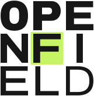
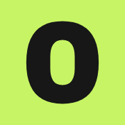
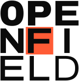

Row 1: weight (900 to 360)Row 2: width (62 to 120)
Weight and width travel across the nine letters, from a closed, heavy O to a wide, hairline D. Concept 01 of four, refined into the final identity.
The idea
OPENFIELD has exactly nine letters, so the whole name fits a 3 x 3 square: OPE, NFI, ELD. The same weight ramp runs through it corner to corner, and the F, the first letter of FIELD, sits on a lime tile at the exact centre.

Logo suite
Primary logologo/openfield-logo.svg
Horizontal logologo/openfield-horizontal.svg
Symbolsymbol/openfield-symbol.svg

Text-size wordmark (under 160 px wide)logo/openfield-wordmark-text.svg
Graphic language
The ramp is a layout rule as much as a logo: scale the 3 x 3 square, crop it, bleed it off the edge, until the letters turn into structure. One-colour black on lime is the only place lime carries the whole layout; the logo itself always sits on ink or paper.
One colour

In one colour the lime counter stays open and the F loses its tile; nothing else changes.
Colour
Favicon and small sizes

The favicon is a separate mark on purpose: the 3 x 3 square cannot hold nine letters at 16 px, so the small mark is the heavy O on a lime tile (the counter shows the tile).
Usage
Clear spacex = half the cap height
Keep at least half the cap height free on every side. The horizontal logo uses the same x, measured on its wordmark.
Minimum sizes
| Asset | Digital | |
|---|---|---|
| Logo | 140 px wide | 35 mm |
| Text-size wordmark | 90 px wide | 22 mm |
| Horizontal logo | 180 px wide | 45 mm |
| Symbol (3 x 3) | 48 px | 12 mm |
| Favicon tile | 16 px | n/a |
Do not
NoStretch or squeeze it.
NoRotate or tilt it.
NoAdd shadows, glows or other effects.
NoPut the white logo on a light ground (or the ink logo on a dark one).
Alternative direction


Files
public/brand/ is served by the site as /brand/.
| Folder | What is in it |
|---|---|
logo/ | Primary logo, horizontal logo and text-size wordmark, each in four skins: .svg (light), -dark, -black, -white. |
symbol/ | The 3 x 3 symbol in the same four skins. |
favicon/ | favicon.svg, favicon.ico (16, 32, 48), favicon-16/32/48.png, apple-touch-icon.png, icon-512.png. |
png/ | Transparent PNG previews: logo and horizontal at 2400 px wide, symbol at 1024 px, all skins, plus the orange set. |
alt-orange/ | Black, white and orange alternative: logo, horizontal, symbol, favicon (light and dark where it applies). |